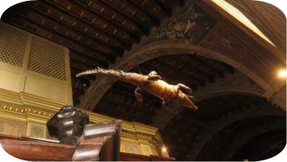
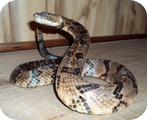
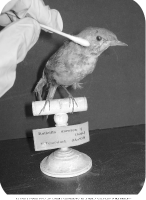

Common Questions
How Long Does Taxidermy Take?
What Is The Oldest Piece of Taxidermy?
The oldest piece of taxidermy is a crocodile at the Santuario Madonna delle Lacrime Immacolate.Though its origins have been lost to the ages, the church has documents detailing the crocodile's removal from the church in 1534. At the very least, it's some 500 years old, making it the oldest existing piece of taxidermy in the world. It was thought to be missing, but in the 18th century the crocodile had reappeared in the church's attic. It was strung up from the ceiling and has remained there ever since.
What Is The Hardest Thing to Taxidermy?
Snakes and rabbits are by far the hardest thing to taxidermy. Snakes, because of the complex musculature they have. Snake's hide also often end up loosing their color and pigmentation when tanned. Taxidermists after tanning then have to completely paint each scale by hand in order to make it look authentic. With rabbits their skin can rip rather easily, making it incredibly difficult to handle. Rabbits also have a smaller bone structure that can be easily broken if mishandled.
What Are The Dangers of Old Taxidermy?
It is very important to be cautious around taxidermy because most items created prior to 1980 likely contain arsenic. Arsenic can be inhaled or absorbed through the skin. This is partly why it's very important to never touch taxidermy that is being displayed. Arsenic is a potent poison and items possibly containing it should be treated with utmost care.
How Do Taxidermy Animals Not Rot?
How long does taxidermy last?
Taxidermy lasts for 20 years on average if not maintained. However, if it is maintained properly, it can remain in pristine condition for 50 years or more( History has shown evidence of this).Factors that reduce the life of taxidermy include extreme temperatures, humidity, exposure to light, bugs, and human touch.
How Long Does Taxidermy Last?
Has Anyone Ever Taxidermied a Human?
With the rise in popularity of taxidermy in the 19th century, there were numerous experiments of human taxidermy. the most famous of which was probably Jeremy Bentham's unsuccessful attempt to have his body made into an 'auto-icon' after his death. There was also 'el negro' or 'the negro of Banyoles'.
Who Invented Taxidermy?
Carl Arkley is the man known as "The Father of Known Taxidermy"